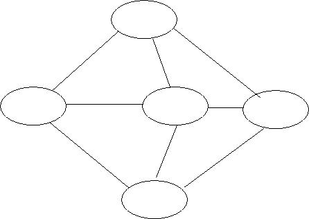
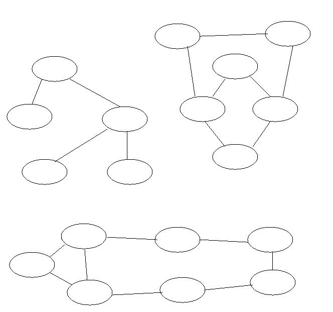

Acknowledgement: This question comes from Introduction to Bayesian Networks by Finn Jensen. The solution is from a web resource for that book.
Let G be a triangulated graph with vertices U, and let A1, A2, ...An be a zero fill-in for G. Assume that eliminated variables (and lines to them) are actually deleted. Let Ci be the set of variables containing Ai and all its neighbours at the time of elimination.
NB. If Ci and Cj are cliques (i<j) such that Ci \ {Ai} is a subset of Cj, then there exists a junction tree for G with the link (Ci,Cj).
Solution: Look at i) and ii) of Exercise 8
Show that it is not possible to create a join tree from the following graph. Identify what the problem is and how the graph can be altered to overcome the problems.

Find optimal triangulations for the following graphs.

Write a program which uses Graham's algorithm to check whether a hypergraph is decomposable. Use gPy's Hypergraph class to represent your hypergraph. Feel free to use any methods of that class (except of course those that check for decomposability!) Use the following hypergraphs as test cases.
Classification of test hypergraphs
If you're feeling ambitious you can adapt your program to construct a join forest en passant.
A complicated solution Simpler, but perhaps slower ones are fine.
Design a class for a basic sampler. Only two public methods are
needed. A constructor __init__ which takes a
probability distribution as a sequence of n floats as
its only argument, and a method sample which spits
out an integer in the list range(n) according to
the probability distribution. This is not hard to get working,
but your job is to ensure that the sampling is
efficient (in the long run) whatever the input distribution.
Last modified: Mon Dec 1 10:15:56 GMT 2008